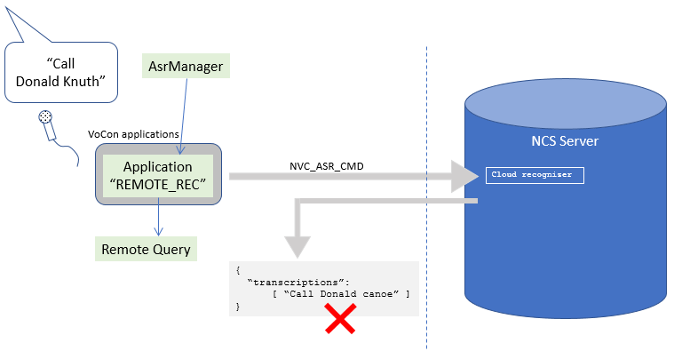
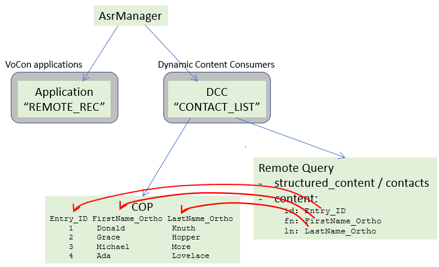
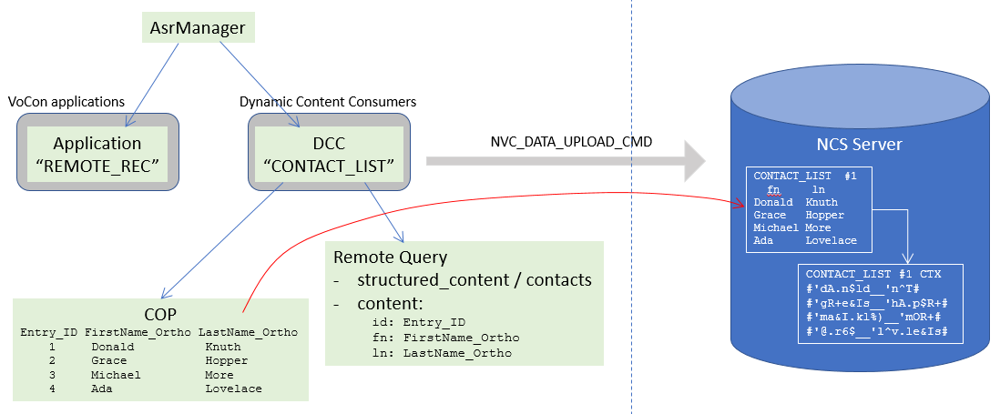
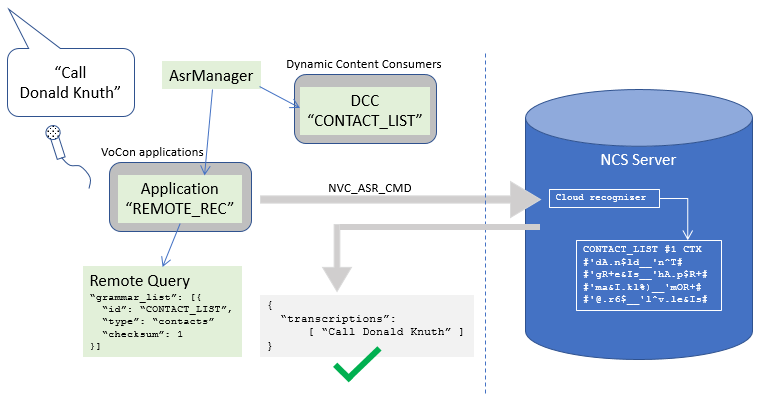

Examples
The sections below give examples of a few use-cases, and the configuration needed to implement them. The examples only highlight configuration that is specific for that use case; how to configure the audio chain or the recognizer is not explicitly shown here. Please refer to JSON Configuration reference and Minimal configuration.
Case 1: a single application
The following is an application configuration for a simple application. It’s a wake-up word application, but apart from some context specificities, nothing else here is specific to wake-up words.
{
"version" : "VoConHigh 5.0",
"application" : {
"name" : "WUW",
"input": [{
"type" : "asr",
"asr" : {
"search" : [{
"name" : "WUW_SEARCH",
"type" : "static",
"static" : {
"file_name" : "wuw_anyspeech.fcf"
},
"vocon_parameters": {
"LH_SEARCH_PARAM_TSILENCE": 150
}
}]
}
}]
}
}
The main components of this application are the name, and the input
specification. The name will be used for activation. The input
specification describes the setup of the search space. In this case it
is an ASR specification only; there is no NLU here. The search space
consists of a single, static context, which will be read from the file
wuw_anyspeech.fcf. Additionally, a custom ASR parameter setting
is included.
(Paths in JSON configuration files are relative to the configuration
directory. In this case, wuw_anyspeech.fcf is loaded from the
configuration directory.)
The general pattern for defining a “local” application is this:
{
"application" : {
"name" : "<name>",
"input": [{
"type" : "asr",
"asr" : {
"search" : [{ "...": "..." }]
}
}]
}
}
The search can be static, which means it refers to a pre-generated
context, or dynamic which means it will be created based by a
dynamic content consumer (see …).
Case 2: a simple cloud application
Broadly, a cloud application replaces the local, embedded recognizer
with a “proxy” recognizer. Instead of doing the actual recognition,
the proxy recognizer sets up a connection to an NCS cloud server, and
then initiates a recognition session on the server and streams the audio
to it. The server will then respond back with transcriptions, and the
proxy recognizer will funnel the cloud result into the regular result
processing pipeline (<IRecognizerListener>.onResult(...)):
{kind=link}
In order to make this work, a cloud application assumes first of all
that there is a proper CloudServices configuration
available. Information on how to configure cloud services can be found
here: Remote / Cloud Configuration Options (overview of connection info and
cloudservices JSON definitions), here:
Cloud services (JSON reference; specifically the
{ ICloudServices } section) and the CloudServices SDK user guide.
The general pattern for defining a cloud application is similar to defining a “local” application:
{
"application": [{
"name": "<name>",
"input": [{
"type": "cloud",
"cloud": {
"cloud_services_name": "<csname>",
"query" : { "...": "..." }
}
}]
}]
}
The cloud application also has a name, which is used for activating
the application. This happens in exactly the same way as for local
applications, by calling setApplications(...) on the AsrManager.
The difference is that the input type is declared to be of type
"cloud". The "cloud" entry then contains the data needed for
doing the cloud recognition. This includes specifying the
CloudServices configuration to use (typically defined in
cloudservices.json, and referred to by name), the specific command
you want the server to perform, and the data and parameters needed to
perform the command.
The audio streaming part is taken care of internally; when a cloud input is activated, ASR component will set up an internal audio path that handles sample rate conversion, speech signal enhancement, and audio encoding and buffering. The section Audio processing path for Cloud ASR has more details on the audio setup for cloud recognitions.
Here is an example of a simple cloud application configuration:
{
"version": "VoConHigh 5.0",
"application": [{
"name": "REMOTE_TEST",
"input": [{
"type": "cloud",
"cloud": {
"cloud_services_name": "csHttp",
"query" : {
"name": "remote_test_query",
"command": "NVC_ASR_CMD",
"connection_info": {
"json" : {
"dictation_type" : "automotive-dictation",
"dictation_language" : "eng-USA"
}
},
"param": {
"type": "REQUEST_INFO",
"REQUEST_INFO": {
"json" : {
"start": 0,
"end": 0,
"text": "",
"enable_intermediate_response": 0
}
}
}
}
}
}]
}]
}
Key items in "cloud" section are the cloud services name (usually
defined in cloudservices.json), and the actual query to send to
the server.
In the example, the query command is NVC_ASR_CMD; the actual
command will depend on the server setup; you should receive this info
when your cloud server is delivered.
The connection information sent along with the command details which
language the query is for, which type of audio
(e.g. automotive-dictation, or ccpoi-assistant), and more.
The connection information is different depending on the command, and
the server configuration. A more complete example of the keys and
values that the connection info section can contain is here:
Connection info.
Most cloud commands also require request info to be sent in the parameters. This includes a flag to indicate whether you want to receive intermediate results (e.g. for message dictation).
As a side note, the json keys used with the connection_info
and REQUEST_INFO keys mean that Cerence ASR will not interpret the
contents of these sections. The contents are sent as-is to the server
in the remote request. As an alternative to using json directly,
it is possible to define, for example, the connection info elsewhere
and assign a name to it. This can then be referred to using the
uses key, which avoids duplication and promotes re-use of the
configuration.
More information can be found in the Cloud Applications section.
Case 3: a cloud application that uses uploaded data
Just like in local recognition, there are cases in remote recognition, where you want to use dynamically generated contexts for recognizing user-specific phrases. A common example is where you want to recognize names from the user’s contact list.
Suppose you have this remote application setup:
{kind=link}
How can we increase the remote recognizer’s recognition accuracy for the user’s specific dictionary entries?
In local situations, you use a dynamic content consumer for this, which will prepare a context (e.g. a list context), which can be added to a host grammar by filling it into a slot of the host grammar.
In remote situations, the concept is similar. You also use a dynamic
content consumer, but rather than constructing a local context, the
data is uploaded to the server, with a unique ID attached to it. The
server then creates a context from this data, and returns a version
number (checksum) to the client. The ID and checksum can then be
used by the client to refer to this grammar.
Most commonly, the data to be uploaded on the client is organised in a so-called COP files (“Categorized Orthographic Phonetic” file). A COP file is basically a file that contains a table specification (column names, column types) followed by rows that contain the actual data. The columns can contain numbers, orthographic data (written words) and phonetic data (phonetic transcriptions of written data). If no phonetic transcriptions are included in a COP file, the transcriptions will be generated on the server, using the transcription method that is available for the language in question.
Step 1: prepare the data
Here is an example of a simple COP file:
#ECO V1.2 UTF-8;
#ECOScheme COP1 V1.6
#EDBDatabaseID NBT_FirstLastNames_v_1_0
#EDBTableUpdateID 12345678
#EDBTableUpdateMode GivenInColumn
#EDBTableUpdateType FullUpdate
# Columns:
#Column1 Entry_ID
#Column2 FirstName_Ortho
#Column3 LastName_Ortho
# Column1 to Column2 must contain defined values, the others may be empty.
# In the column EDBTableUpdateMode the allowed values are: r (remove) and a (add)
#Format(Entry_ID) Ident
#AFType(Entry_ID) NumID
#NumIDFormat(Entry_ID) Decimal
#NumIDBinLength(Entry_ID) 32
1; "Donald"; "Knuth"
2; "Hopper"; "Grace"
3; "Michael"; "More"
4; "Lovelace"; "Ada"
This COP file has three columns:
- Entry_ID is an identifier field, of type integer
- FirstName_Ortho and LastName_Ortho are strings
The column names follow the COP conventions of using _ID and _Ortho
suffixes (the _Phon suffix is not used in this example). The field
EDBTableUpdateID will contain the server-side ID (called
checksum) of the table on which the update will be performed.
Step 2: Upload mechanism
An example of a dynamic content consumer (DCC) for uploading data is this. (For more details, see Uploading Data):
{
"dynamic_content_consumer" : {
"name" : "CONTACTS_LIST",
"content" : [
{
"name" : "Entry_ID",
"type" : "integer"
},{
"name" : "FirstName_Ortho",
"type" : "string"
},{
"name" : "LastName_Ortho",
"type" : "string"
}],
"type" : "remote",
"remote" : {
"cloud_services_name": "csHttp",
"command": "NVC_DATA_UPLOAD_CMD",
"connection_info": {
"json" : {
"dictation_type" : "automotive-dictation",
"dictation_language" : "eng-USA"
}
},
"grammar_type": "structured_content",
"structured_content": {
"category" : "contacts",
"id": "Entry_ID",
"content" : [{
"name" : "fn",
"link": {
"name": "FirstName_Ortho"
}
},{
"name" : "ln",
"link": {
"name": "LastName_Ortho"
}
}]
},
"force_clear_all": "true"
}
}
}
In this DCC, there are three components:
- a name
- a content description
- the query to send to the NCS server
The name of the DCC will be used as the name for the remote context, created using the data uploaded by this DCC. It is important to remember this: although the name is given to a local object (the DCC), and is used locally to refer to this DCC, the name will also be used on the server to refer to the context that will be created there.
The content descriptions corresponds to columns in the COP file. The COP file name does not appear in the DCC configuration, because it will usually be generated at run-time, and passed to the DCC during the data preparation phase.
The remote query command in this case is a data upload command,
NVC_DATA_UPLOAD_CMD, with a grammar type of “structured content”,
and a structured content category of “contacts”. (Refer to
Cloud uploads: structured content for a more detailed explanation of content
types.)
The “content” field of the structured content description describes how to map remote fields to fields in the COP file, and specifies that “Entry_ID” is the identifier column. This is illustrated here:
{kind=link}
The force_clear_all key specifies that the server should first
clear the context, before adding the items from the COP file. It is
also possible to incrementally add items to an existing remote
context. Here, the version number (checksum, in the
EDBTableUpdateID field of the COP file) comes into play; you
use this to specify to which remote version of the context you want to
add the new entries. If the version number doesn’t match, the entries
will not be added to the context.
Sending the upload command to the server will cause the contents of the COP file to be sent to the server, and will cause the server to use it to create a context that can be used in a remote recognition:
{kind=link}
If successful, the server will send back the context’s version number
(checksum) back in the command’s JSON result structure.
Step 3: recognition using the uploaded data
Below is an example of an ASR application that uses uploaded data in a remote recognition request. Most of the entries are the same as in a regular cloud request:
{
"version": "VoConHigh 5.0",
"application": [{
"name": "REMOTE_REC",
"input": [{
"type": "cloud",
"cloud": {
"cloud_services_name": "csHttp",
"query" : {
"name": "remote_test_query",
"command": "NVC_ASR_CMD",
"connection_info": {
"json" : {
"dictation_type" : "automotive-dictation",
"dictation_language" : "eng-USA"
}
},
"param": {
"type": "REQUEST_INFO",
"REQUEST_INFO": {
"json" : {
"start": 0,
"end": 0,
"text": "",
"enable_intermediate_response": 0,
"grammar_list": [{
"id": "CONTACTS_LIST",
"type": "contacts",
}]
}
}
}
}
}
}]
}]
}
The only addition here is the "grammar_list" section:
...
"grammar_list": [{
"id": "CONTACTS_LIST",
"type": "contacts",
}]
...
The "grammar_list" entry in the remote query’s REQUEST_INFO
tells the server which uploaded contexts should be used during the
recognition. The entries in the grammar list contain the grammar ID
(which corresponds to the name of the DCC used for uploading the
data), and a type description.
The entry shown above does not have a "checksum" key. It is not
mandatory, but it can be used to declare that a specific version of
the uploaded data should be used. If the remote version has a
different version number, it will not be used in the recognition.
So, telling the remote recognizer which contacts context to use in addition to its normal context setup, will enable it to achieve a higher accuracy on user-specific contact information:
{kind=link}